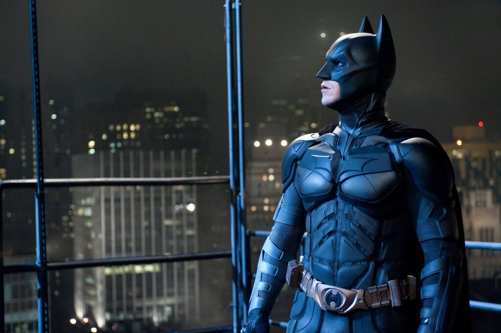
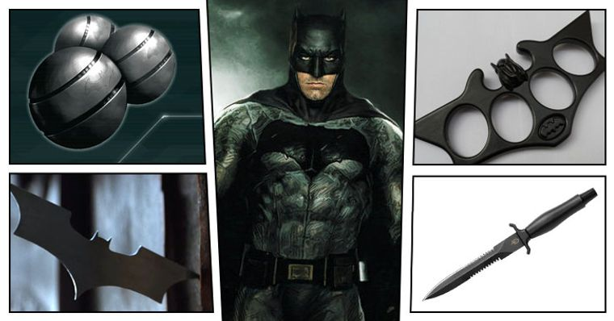

Tudo começa quando um passeio em família para o cinema termina em tragédia para o jovem Bruce Wayne.
Andando de volta para casa, Bruce, seu pai Thomas, e sua mãe Martha, acidentalmente se aventuraram em uma área perigosa de Gotham City e foram abordados por um assaltante.
Não contente apenas em roubar a família rica, o bandido Joe Chill (cuja identidade só foi ser revelada anos depois) matou o Dr. Thomas e Martha Wayne antes de desaparecer na escuridão.
Quando ele se ajoelhou ao lado do corpo de seus pais, Bruce jurou vingá-los.
A partir daí, Alfred Pennyworth, o mordomo da família, iria ajudar o jovem rapaz em sua luta contra o crime.
Aos 14 anos, Bruce embarcou em uma jornada que o levou a todos os continentes, enquanto procurava aprender todas as habilidades que ele precisaria para cumprir sua promessa.
Ele estudou criminologia, ciência forense, psicologia criminal e aprendeu a lutar com artistas marciais, dominando todos os estilos de luta.
Com o tempo, Bruce se transformou em uma arma viva para travar a guerra contra o crime e a injustiça.
Em seu retorno a Gotham, Bruce perseguiu bandidos de rua como um vigilante à paisana.
Espancado pelas próprias pessoas que ele pretendia proteger, ele mal sobreviveu ileso em sua primeira noite em ação.
Enquanto sangrava na Mansão Wayne, Bruce sabia que primeiramente teria que colocar medo nos corações de seus inimigos.
Foi então que um morcego atravessou a janela do escritório, dando a Bruce a inspiração que ele precisava.
Estabelecendo uma sede secreta em sua mansão, Bruce se tornava o Batman, o Cavaleiro das Trevas para proteger Gotham e seus cidadãos dos piores vilões.
Alfred Pennyworth continuou sendo seu confidente, cuidando de seus ferimentos e oferecendo sábios conselhos.
Batman tornava-se, então, uma lenda urbana, que causava arrepios no submundo da cidade e de todos aqueles que, de alguma forma, ousavam quebrar as leis.

Equipamentos
Batarangue:
Uma mistura entre bumerangue e shuriken baseado em lâminas de arremesso. Eles possuem o formato inspirado no símbolo de um morcego.
Em algumas versões alternativas, o Batarangue explode, emite eletricidade e raios.
Bat-Garra:
Batman utiliza a Bat-Garra para acessar lugares altos.
Em diversas situações, o Cavaleiro das Trevas pode utilizar a arma para puxar criminosos em sua direção.
Máscara de Gás e Respirador:
Usada pra proteger Bruce Wayne de gases e outros produtos tóxicos, além de permitir que ele seja capaz de respirar debaixo d'água.
A máscara se encaixa na abertura do capuz.
Granadas de Fumaça:
As Granadas de Fumaça podem ser usadas para distrair o inimigo em uma situação de fuga, ou para confundir o adversário durante o combate.
Granadas Sônicas:
As Granadas Sônicas deixam os inimigos desorientados, permitindo que Batman possa se livrar deles facilmente.
Granadas de Luz:
As famosas Granadas Flash de jogos de tiro em primeira pessoa.
Batman também carrega algumas consigo, caso seja necessário cegar seus inimigos temporariamente.
Bat-Minas:
As Bat-Minas podem ser utilizadas quando o Cavaleiro das Trevas quer preparar uma emboscada ou mesmo durante o combate, para atordoar seus inimigos.
Tasers:
Durante a Era de Ouro e em diversos filmes do Cavaleiro das Trevas, vemos Bruce Wayne utilizando tasers.
É uma versão mais potente das armas de choque utilizadas pela polícia, que ajudam o vigilante a neutralizar seus inimigos de maneira não letal.
Soqueiras:
Afinal de contas, por mais que seja apenas um humano, Bruce Wayne precisa enfrentar todo tipo de inimigos.
Assim, a potência de seus golpes é amplificada graças a soqueiras personalizadas.
Anel de Kriptonita:
Afinal de contas, ele precisa estar preparado caso o Homem de Aço perca o controle.
O anel possui uma cápsula de chumbo que, quando aberta, expõe uma pedra de Kryptonita.

Ficha técnica
Nome completo: Bruce Wayne
Características: 1,88 de altura / 95 kg de peso
Ocupação: Magnata de negócios / Filantropista/ Proprietário da corporação Wayne Enterprises/ Vigilante mascarado/ Defensor da lei/ Detetive/ Líder da Corporação Batman
Terra Natal: Gotham City
Criado por: Bill Finger / Bob Kane
Editora(s): DC Comics
Base de operações: Gotham City / BatCaverna
Situação presente: Ativo
Codinomes conhecidos: O Cavaleiro das Trevas / O Cruzado Encapuzado/ O Detetive das Sombras / O Maior Detetive do Mundo / Homem-Morcego